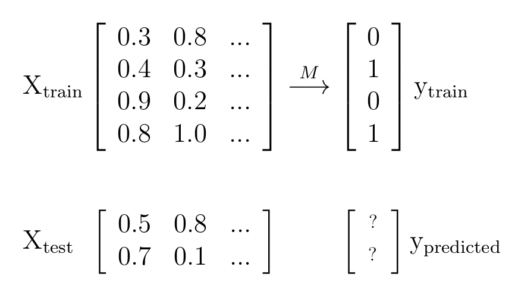
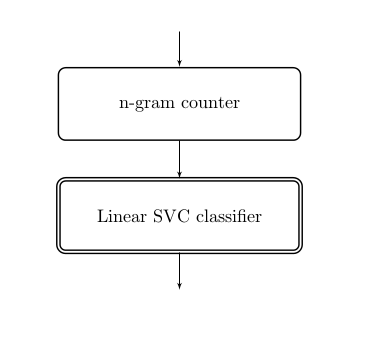
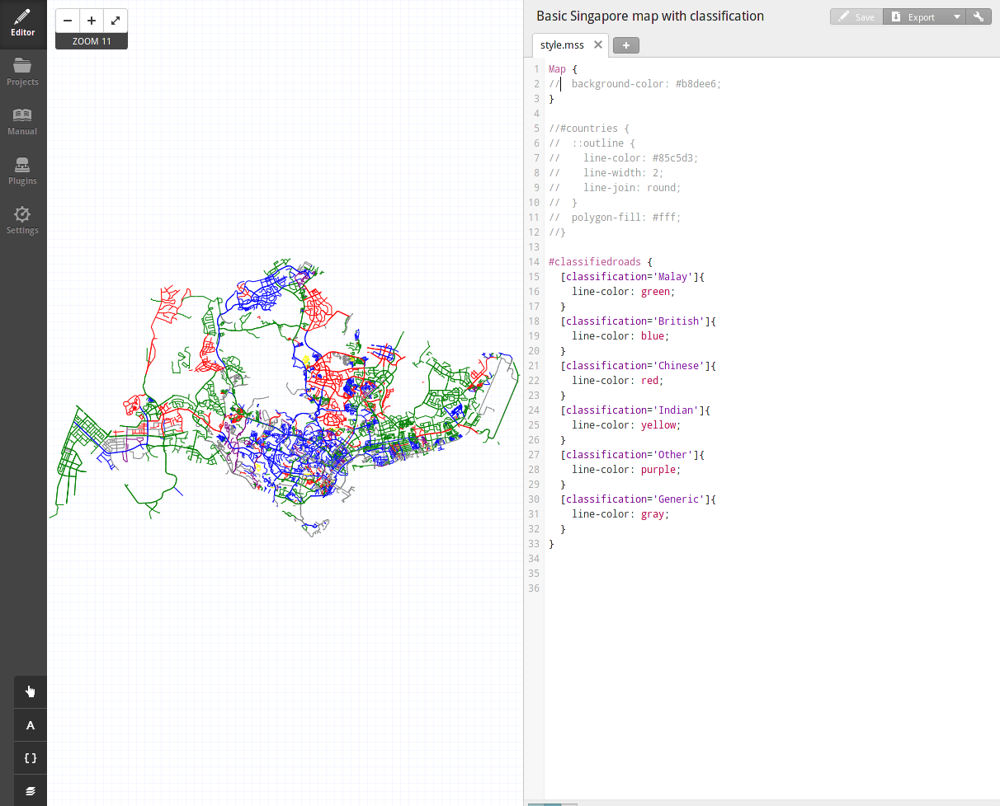

Grids, Streets & Pipelines
Building a linguistic street map with scikit-learn
Michelle Fullwood / @michelleful
Who I am
I'm a grad student in linguistics.
I love languages and maps.
Who I'm not
An expert on machine learning or scikit-learn.
The end product
Singapore street names

- Alkaff Avenue
- Belilios Lane
- Kadayanallur Street
1st century

Source: raremaps.com
1819
Source: 新加坡先驱人物19th century
1821
 Source: Wikimedia Commons
Source: Wikimedia Commons
{kind=link}
1960's-
Source: hdbflatforsale.com
Clusters of street names
© Open Street Map contributors
Wrangling the data
OpenStreetMap Metro Extracts

GeoJSON

{ "type": "Feature",
"properties":
{ "id": 5436.0, "osm_id": 48673274.0,
"type": "residential",
"name": "Montreal Drive", ...
"class": "highway" },
"geometry":
{ "type": "LineString",
"coordinates": [ [ 103.827628075898062, 1.45001447378366 ],
[ 103.827546855256259, 1.450088485988644 ],
[ 103.82724167016174 , 1.450461983594056 ],
... ] } }
GeoPandas
>>> import geopandas as gpd
>>> roads = gpd.GeoDataFrame.from_file('singapore-roads.geojson')
>>> roads.shape
(59218, 13)
Plotting with GeoPandas
>>> roads.geometry.plot()Plotting with GeoPandas
>>> # get an outline of Singapore's administrative boundaries
>>> admin = gpd.GeoDataFrame.from_file('singapore-admin.geojson')
>>> singapore = admin.ix[0] # only use the first row (country boundary)
>>> gpd.GeoSeries(singapore.geometry).plot()

Filtering with GeoPandas
>>> # `within` function returns true if one feature
>>> # sits within the boundary of another
>>> roads = roads[roads.geometry.within(singapore.geometry)]
>>> roads.geometry.plot()
Repetition in the data

Eliminating repetition
>>> streets = set([extract_name(street) for street in streets])
>>> len(streets)
1711
Enter scikit-learn
Supervised classification
Supervised classification

Classification schema
- Malay
- Chinese
- English
- Indian
- Generic
- Other
Train/Test split
# split into train and test data
data_train, data_test, y_train, y_true = \
cross_validation.train_test_split(data.roadnames, data.classification,
test_size=0.2,
random_state=42)Character n-grams
Tyrwhitt
| unigrams | t(3) y r w h i |
| bigrams | #t ty yr wh hi it tt t# |
| trigrams | #ty tyr yrw rwh whi hit itt tt# |
Character n-grams
>>> from sklearn.feature_extraction.text import CountVectorizer
>>> ngram_counter = CountVectorizer(ngram_range=(1, 4), analyzer='char')
>>> X_train = ngram_counter.fit_transform(data_train)
>>> X_test = ngram_counter.transform(data_test)
Selecting a classifier

Building the classifier
>>> from sklearn.svm import LinearSVC
>>> classifier = LinearSVC()
>>> model = classifier.fit(X_train, y_train)
Selecting an evaluation metric
| sklearn.metrics. | accuracy_score average_precision_score f1_score precision_score recall_score roc_auc_score |
Testing the classifier
>>> y_test = model.predict(X_test)
>>> sklearn.metrics.accuracy_score(y_true, y_test)
0.558139534884
Improving the classifier
- More data
- Other classifiers
- More features
- Model selection
- Hyperparameter tuning
Effects of Data and Classifier type
Effects of Data and Classifier type
- The more data the merrier...
- ...mostly
- Powerful models need a lot of data
- Simple models can be extremely effective
Pipelines
A rewrite using pipelines
>>> from sklearn.pipeline import make_pipeline
>>> ngram_counter = CountVectorizer(ngram_range=(1, 4), analyzer='char')
>>> clf = LinearSVC()
>>> pipeline = make_pipeline(ngram_counter,
clf)
>>> model = pipeline.fit_transform(data_train)
>>> y_test = model.predict(data_test)
Adding a new feature
Number of words in road name
- More words: likely to be of Chinese origin
- Need a new data transformer that takes road names and outputs this number
Writing your own transformer class
import numpy as np
from sklearn.base import TransformerMixin
class ApplyTransform(TransformerMixin):
"""Applies a function f element-wise to a numpy array"""
def __init__(self, fn):
self.fn = np.vectorize(fn)
def transform(self, X, y=None):
return self.fn(X)
def fit(self, X, y=None):
return self
wordcount_pipeline = make_pipeline(
ApplyTransform(lambda roadname: len(roadname.split()))
)
Putting transformers in parallel

Feature Union
from sklearn.pipeline import make_pipeline, make_union
pipeline = make_pipeline(
make_union( # parallel
ngram_counter, # can pass in either a transformer
wordcount_pipeline # or a pipeline
),
clf # classifier
)Another useful transformer
class ColumnSelector(TransformerMixin):
"""Selects column(s) from a numpy array
Code from mlxtend Machine Learning Library Extensions
https://github.com/rasbt/mlxtend/blob/master/mlxtend
"""
def __init__(self, cols):
self.cols = cols
def transform(self, X, y=None):
return X[:, self.cols]
def fit(self, X, y=None):
return self
Additional features I tried
- Average number of words
- Average length of word
- Are all the words in the dictionary?
- Is the road type Malay? (Street, Road vs Jalan, Lorong)
Effects of adding features

Effects of adding features
- Duplicating old information is not useful
- Adding fresh information is
A useful resource
"Using scikit-learn Pipelines and FeatureUnions"by Zac Stewart
Feature selection
Culling the features to just the most important:
- Reduces risk of overfitting
- Improves accuracy
- Reduces training time
Feature selection methods in sklearn
- SelectPercentile
- L1-based feature selection
- Principal Components Analysis
- (and more...)
Using feature selection
from sklearn.feature_selection import SelectPercentile, chi2
pipeline = make_pipeline(
feature_pipeline,
SelectPercentile(chi2, percentile=50), # 50% highest scoring features
clf,
)
Effects of feature selection
Effects of feature selection
- Feature selection doesn't necessarily help.
- Only use if you think your model is overfitting the data or you really have a very large number of features.
Hyperparameter tuning
>>> from sklearn.grid_search import GridSearchCV
>>> pg = {'svc__C': 10. ** np.arange(-3, 3), 'svc__gamma': 10. ** np.arange(-3, 3)}
>>> pipeline = make_pipeline(ngram_pipeline, SVC())
>>> grid = GridSearchCV(pipeline, param_grid=pg, cv=5)
>>> grid.fit(X_train, y_train)
>>> grid.best_params_
{'svc__gamma': 0.001, 'svc__C': 100.0}
Effects of hyperparameter tuning
- Huge: 35% to 70% jump in accuracy on RBF SVC
- Can be time-consuming
- Worth it, especially (?) on complex models
Making the map
Merging data frames
gpd.pd.merge(roads, classification, on='road_name', how='left')
Tilemill
CartoCSS
#streets {
[classification='Malay']{
line-color: green;
}
[classification='Chinese']{
line-color: red;
}
[classification='British']{
line-color: blue;
}
[classification='Indian']{
line-color: yellow;
}
...
}Summary
- Most bang for the buck: understanding the data, adding informative features
- Tune hyperparameters: it's time consuming, but worth it
- Adding more data helps (watch out for plateauing)
- Use feature selection if your model is overfitting or you have a large number of features.
- Don't discount simple classifiers, but also try more powerful ones if you have the data to back them up.